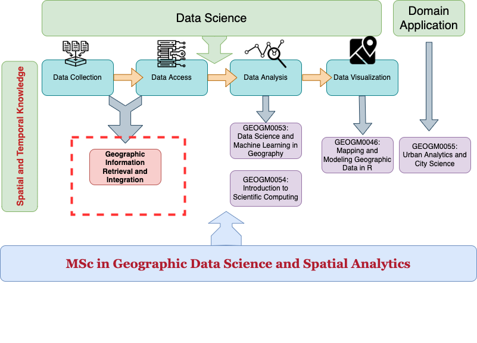

Welcome to GEOGM0068: Geographic Information Retrieval and Integration#
This unit introduces core principles of geographic information retrieval and integration by covering basic concepts of spatial indexing and ranking, spatial query, spatial data conflation, as well as data-driven techniques for geo-text mining. Applications on urban structures and smart city will be applied to assist the learning process.
The unit aims to:
Teach you the fundamental concepts behind accessing and managing geographic information
Raise the awareness of how geographic (spatial) data is different from non-geographic (spatial) data with respect to retrieving and integrating information
Encourage you to design more efficient geographic (spatial) data management strategies in your projects
Facilitate you using state-of-the-art techniques to extract and integrate geographic information, especially from unstructured data (e.g., tweets, newspapers, etc.)
(Tentative) Syllabus - TB2 2023/24#
|
|
|
|
|---|---|---|---|
Week 1 (Jan. 23) |
* Unit overview and policy |
GIR: Chapter 1 and 2 |
No Lab |
Week 2 (Jan. 30) |
Spatial Database I |
GIS: Chapter 2 and 3 |
Lab 1 |
Week 3 (Feb. 06) |
Spatial Database II |
GIS: Chapter 4 |
Lab 1 |
Week 4 (Feb. 13) |
Georeferencing I |
GIR: Chapter 4 |
Lab 2-1 |
Week 5 (Feb. 20) |
Georeferencing II |
GIR: Chapter 4 |
Lab 2-2 |
Week 6 (Feb. 27) |
Reading |
No Lab (Assessment 1) |
|
Week 7 (Mar. 05) |
Spatial Indexing |
GIR: Chapter 5 |
Lab 3-1 |
Week 8 (Mar. 12) |
Spatial Ranking |
GIR: Chapter 6 |
Lab 3-2 |
Week 9 (Mar. 19) |
Geospatial Semantics I |
Lab 4-1 |
|
Week 10 (Apr. 16) |
Geospatial Semantics II |
Same to Week 9 |
Lab 4-2 |
Week 11 (Apr. 23) |
Ethics, Summary, and Career |
- |
No Lab |
Week 12 (Apr. 30) |
Reading |
No Lab (Assessment 2) |
Data Science, Geographic (Spatial) Data Science, and this unit#
This unit is part of the curriculum of MSc in Geographic Data Science and Spatial Analytics taught at the School of Geographic Sciences, University of Bristol. The concept and theory teaching in this unit are closely related to Geographic (Spatial) Data Science and Data Science more broadly. See the image below for a better landscape of what this unit is about:

Resoruce#
Textbook and Reading:#
Required: Geographic Information Retrieval: Progress and Challenges in Spatial Search and Text. 2018 (GIR)
Recommended:
Research articles assigned during the class
Learning Python:#
Python Foundation for Spatial Analysis (an online instruction for spatial analysis using Python. Highly recommended if you want to systematically learn Python.)
Introduction to Data Processing in Python with Pandas (this tutorial focuses on general data processing using the package Pandas.)
Spatial Data Analysis with PySAL Tutorial (this tutorial is less relevant to this unit; but still it is a very good resource for you to learn Python, particularly on the package PySAL, a key tool developed in our own community.)
Office Hour#
Wednesday 3 pm - 5 pm (or by appointment) @ GEOG 2.21N